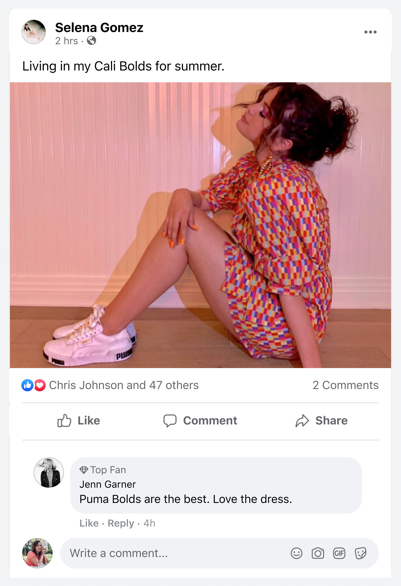

Revamping Public Figures on Facebook
A New Experience
In 2021, Facebook revealed a new Pages experience to enhance how businesses and public figures can connect with their audiences.
As a Product Designer on the Discovery & Distribution team, I had the privilege of working on two features to help public figures stay connected with their audiences:
- Admin Notifications Center: An entry point to custom settings, tabs, and highlights to allow admins of public figure accounts to have more control over their notifications and make it easier to find.
- Top Fans: An incentive to make it easier for fans to stand out when engaging with public figure content.
These features were sketched, prototyped, and tested with the help of other Designers, UX Researchers, Engineers, PMs, and a Product Design Manager who oversaw the work our team was completing.
Understanding Previous Efforts
Immediately after joining the team, I dove into previous research projects that were conducted around public figures to better understand the needs of the admins and audiences.
In doing so, I found research projects from 2019 around features for Facebook Stories. Some of those features were launched, and others were never shipped. I talked to several designers who had worked on those previous efforts and gained a better understanding as to why we were now pushing for admin controls and specific features for the fans.
Admin Notifications Center
My research partner had previously conducted interviews and with public figure admins to better understand their needs, and one area of opportunity was designing a better way for admins to manage their notifications.
Public figure accounts received upwards of 20,000 notifications daily, so I collaborated with my design partner to brainstorm potential solutions that would improve the quality of life for the admins by providing an all-in-one command center with custom settings, tabs, and highlights designed for quicker access.
With an understanding of the current layout of notifications, I sketched potential design layouts that included several of the talking points from the user interviews.

Early sketches - Part 1

Early sketches - Part 2
Using the interview responses as my guide, I came up with a few questions to keep in mind as I explored several layouts:
- Which notification types should be prioritized? Likes, Comments, etc?
- Should admins be able to configure the tabs that are shown?
- Should there be scrolling tabs off the screen?
- What if another public figure reacts to the post?
I reached out to one of our engineers and presented these sketches as a way to call out early technical risks or rabbit holes we may encounter with this solution. One potential risks we discussed was the introduction of "highlights" as a way to prioritize important notifications coming from other public figures, and the technical feasiblity of something like this.
Utilizing a robust design system such as FDS proved to be a bit of a challenge considering the strict rules put in place by Facebook's design system team. Fortunately, they were very responsive and pointed me to the correct components to use for my designs. They even pointed me to one of Facebook's design principles, which is to "reduce, reuse, don't redesign
I ended up with six variants of this new notifications center and presented them to my design team over a period of two weeks. I also communicated with my research partner to understand if they had a particular research method in mind to test the effectiveness of the new design.
Thanks to my team's feedback, I was able to iterate on the design and land on a final concept that was later tested on users.

Six variants of Notifications Center

Final design
Choosing a Research Method
Seeing that we were looking to compare the revamped notifications center against the old one, we agreed upon standard quantitative A/B testing on several segments of public figure accounts. The segments to test on were ultimately decided by our PM and research team. On top of the quantitative tests, I suggested an additional qualitative test to dig deeper into the specific areas of the feature that could be reshaped, but received pushback due to the lack of bandwith from researchers who had to sit in those interviews.
We collaborated on the research project script to make sure we were asking the right questions and would be able to draw conclusions that tied back to our team goals of improving the quality of life for admins through task efficiency.
Engineering Handoff
With Facebook's robust design system, documenting the components used in the new notifications center was straightforward, especially with the help I received from the design system team.
My main goal during the handoff was to provide extremely detailed documentation and any edge cases they should be aware of. Once in the hands of the developers, I made myself available at all times to answer further questions they had about the design.

Component anatomy
Top Fans
As another way of connecting public figures and their audiences, our team also explored a previous research project that was conducted around Top Fans, which aimed at providing incentives to dedicated followers of public figures. This initiative aimed to gamify the experience and make it easier to stand out among other fans.
Previous research had shown that fans were more likely to engage with public figures if they were recognized for their loyalty. I began working closely with the PM to define what success looked like for this feature, and the constraints of the visual design for this feature.
To understand the visual constraints of the feature, I reached out to the visual design team and asked them to show me the current visual language for badges. This allowed me to build the feature in a way that felt cohesive with the rest of the Facebook Design System.
Concept Testing
After crafting several versions of the feature and presenting them to the design team, I landed on a simple icon next to the fan's name to not obstruct the content of the post. I prototyped an end-to-end experience in Figma to serve as our initial concept test to test engagement and adoption of this new feature.
Working closely with our researcher, we outlined the flow of the test and crafted a handful of questions for the interview. For this particular test, we added both qualitative and quantitative questions that would allow us to synthesize more data in the future.

Display Top Fans badge
Building the Experience
After synthesizing the insights from five interviews, the PM gave us the green light to move forward with this feature and build out the rest of the experience, including any edge cases that may arise.
To dig deeper into the insights, we crafted the new end-to-end prototype as a usability test to test the effectiveness of badges, adoption of the feature, and overall satisfaction of the user.
This new prototype was refined and tested with several more users to ensure we were on the right track.
Engineering Handoff
As my contract was coming to an end, I worked with my design partner to document the components used in this experience and presenting any edge cases they should be aware of.
Keeping strong communication lines between myself and the Facebook team allowed me stay close to the project while not directly being involved in the launch of this feature.
Stronger Connections and Higher Engagement
We observed positive task efficiency on the admin notifications center, but not positive enough to ship live to the entire user base. Top Fans, on the other hand, saw moderate adoption and was able to be shipped successfully.
- Notifications center saw a 7% increase in task efficiency (time to clear notifications)
- Top Fans saw a 25% increase in comments and reactions from designated top fans after the quarter following the intial launch
- Overall platform engagement saw a 11% increase between public figures and their audiences the quarter following the intial launch
As an external hire, these results were communicated to me after my contract ended. Had I stayed on the team longer, I would have loved to conduct more qualitative studies to understand why the notifications center didn't perform as well as Top Fans. Could it be that public figure admins don't care to read through all their notifications?

Top Fans live on Facebook
Lessons Learned
This was my first project at a large-scale company and taught me a lot about effective collaboration and communication across teams.
It also reinforced the importance of balancing innovation with user familiarity. With Facebook being as massive it is, it's crucial to stick to the boundaries of the design system to successfully create new features that feel both fresh and intuitive.
 . I convert user research into end-to-end experiences that bring in revenue for B2B & B2C companies.
. I convert user research into end-to-end experiences that bring in revenue for B2B & B2C companies.